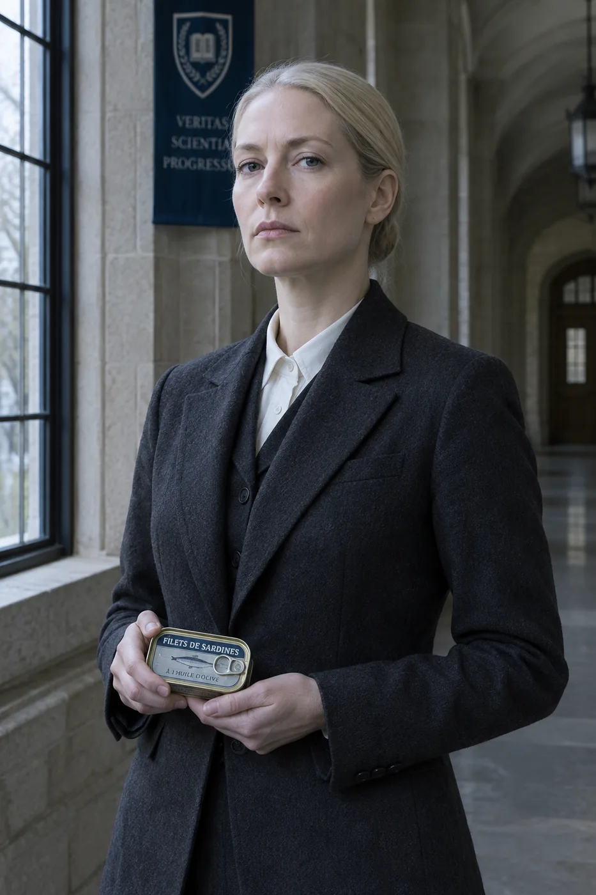

Prudence Hargrove, D.Phil.
Dean of the Academy · Hargrove Chair of Foundational Discomfort
Dean Hargrove founded the Academy after a sabbatical year spent eating only what her hosts insisted was "actually very good once you get used to it." She got used to all of it, wrote the field's standard text, and has taught TAST 101 every term since, on the principle that the dean should meet the warm milk first. Her office hours are held over a shared pot of coffee from the departmental machine, which she describes as "week nine material."
On camera: the 2019 convocation address, delivered between bites of the casserole that would later anchor the capstone.
Bernard Okonkwo, Ph.D.
Professor of Fermentation Studies · Keeper of the Sealed Room
Professor Okonkwo leads the 200-level sequence and both graduate seminars. His research concerns the moment a smell stops being an argument and becomes a fact, a transition he has timed to the second for eleven national cuisines. The specimen jar on his desk is covered because visitors kept asking, and uncovered on the last day of TAST 401, because by then students have stopped asking.
On camera: a 2022 documentary segment, forty minutes, one expression.

Astrid Lindqvist, Fil.Dr.
Visiting Professor of Nordic Preservation · Instructor of Record, TAST 320
Professor Lindqvist joined the Academy from a coastal institute she declines to name, bringing the surströmming practicum and a policy of opening the tin herself, outdoors, upwind, while lecturing without notes. Students describe her seminar as the most frightening and the most useful three hours of the program. She has never flinched. The external examiner has stopped trying.
On camera: the opening-procedures training film, which the Academy shows to applicants' families on request.
§Adjunct and emeritus
The Academy also retains four adjunct lecturers, a gas station sushi practicum supervisor of nineteen years' standing, and one professor emeritus who no longer tastes anything but attends every defense, for the atmosphere.